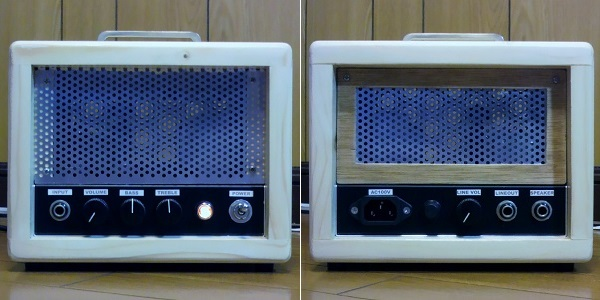
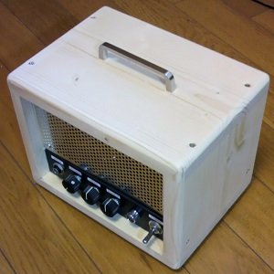

Fender Champ Amp AA764改～木工編～
2014年09月02日 カテゴリー：ギターアンプ・ベースアンプ

以前作ったChampですが、真空管がむき出しのままだったので、木でキャビネット的なものを作りました。まぁ切ってボンドとネジで組み立てただけで、取り立てて説明するようなことはありません。塗装は水性ニスだけで済ませました。
適当に安いパイン材を近所のホームセンターで買ったのですが、結構反っていて苦労しました。合板や集成材の方が反りにくくて使いやすいかもしれません。

真空管アンプだとどうしても図体が大きくなってしまいます。